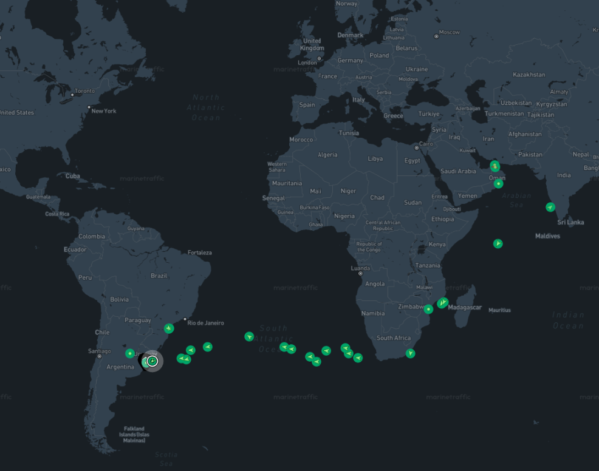
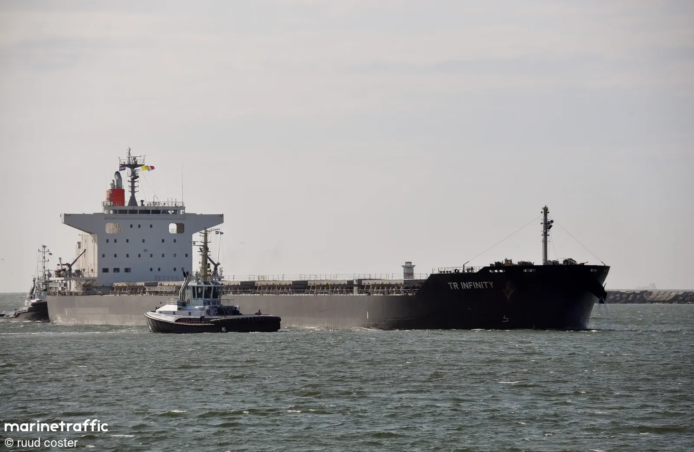
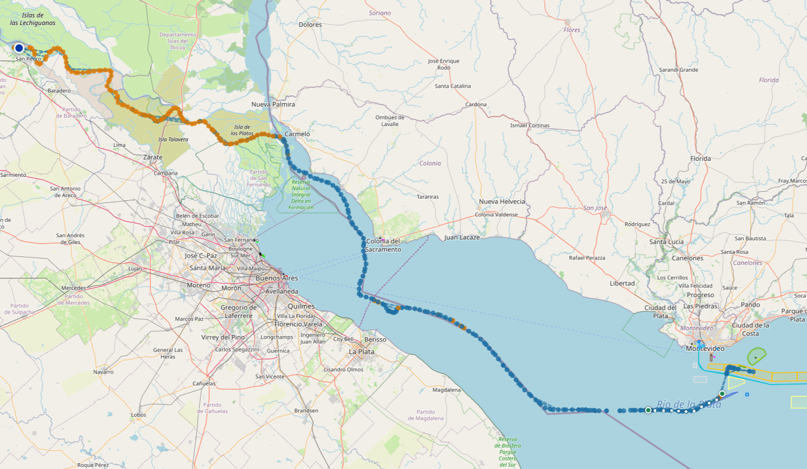
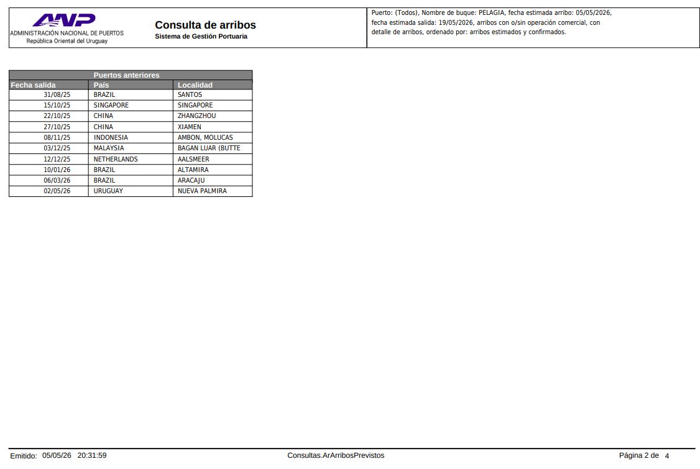
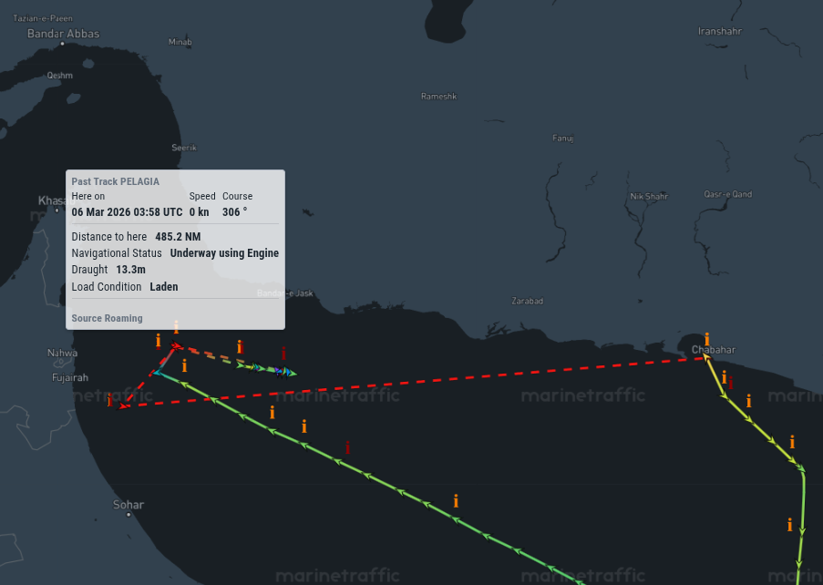

IR BIK: graneleros desde Irán al Río de la Plata
6 de mayo de 2026
Índice

El 1 de mayo de 2026 llegaron al fondeadero de Recalada (frente a Montevideo) los primeros paquetes AIS del ANDERMATT, un granelero que había partido de Bandar Imam Khomeini (BIK), el principal puerto de exportación de Irán sobre el Golfo Pérsico, 38 días antes. Su llegada abrió una ventana hacia un flujo de tráfico de graneleros que atravesaron el Estrecho de Ormuz con destino al Cono Sur para carga en Argentina, Uruguay y Brasil.
El ANDERMATT

ANDERMATT en maniobras · © ruud coster / MarineTraffic
El ANDERMATT, navega con bandera de Liberia 🇱🇷 MMSI:636022943 IMO:9738791 Callsign:5LLE4, fue el primero que recibi asi que es el que mas datos estuve obteniendo, como para tener un ejemplo de un barco con estas caracteristicas.
Línea de tiempo del viaje
Carga en San Lorenzo (Renova Sur)
Tras fondear en Recalada, el ANDERMATT subió el Río de la Plata hasta San Lorenzo para cargar subproductos oleaginosos entre el 2 y el 8 de mayo, con fecha de zarpe el 9 de mayo rumbo al Golfo Árabe.

Track AIS del ANDERMATT: llegada por el Río de la Plata (azul) y ascenso por el Paraná hasta San Lorenzo (naranja).
| Producto | Cantidad (t) | Destino | Empresa |
|---|---|---|---|
| SHULLS (pellets girasol) | 1.860 | Jordania 🇯🇴 | YPF |
| SBM (harina de soja) | 17.600 | Arabia Saudita 🇸🇦 | BUNGE |
| SBM (harina de soja) | 17.600 | Jordania 🇯🇴 | BUNGE |
| SHULLS (pellets girasol) | 6.940 | Jordania 🇯🇴 | BUNGE |
Total embarcado: ~44.000 toneladas.
La flota: cruces del Estrecho de Ormuz
Posiciones AIS de la flota BIK → Cono Sur (marzo–abril 2026). Puntos verdes: señales recibidas a lo largo de la ruta.
Entre el 31 de marzo y el 27 de abril de 2026 se registraron 17 barcos cruzando el Estrecho de Ormuz desde el Golfo Pérsico con destino al Cono Sur. El flujo fue continuo — un cruce cada 1 a 3 días — sin interrupciones evidentes durante todo el período.
| Barco | Cruce Estrecho de Ormuz | Destino | Transponder |
|---|---|---|---|
| ANDERMATT | 2026-03-31 | 🇺🇾 RECALADA | |
| MINOAN GLORY | 2026-04-01 | 🇺🇾 RECALADA | |
| JUN YUAN | 2026-04-01 | 🇺🇾 RECALADA | |
| CHRISTINA V | 2026-04-02 03:35–12:28 | 🇺🇾 RECALADA | AIS apagado múltiples veces |
| STARDUST | 2026-04-02 | 🇺🇾 Nueva Palmira | |
| GIACOMETTI | 2026-04-04 | 🇧🇷 Rio Grande | |
| SAINT MYRON | 2026-04-06 | 🇧🇷 Salvador | |
| IOLCOS DESTINY | 2026-04-08 | 🇺🇾 RECALADA | AIS apagado antes de cruzar |
| NEW AMBITION | 2026-04-08 | 🇺🇾 RECALADA | |
| GENEVE | 2026-04-12 | 🇧🇷 Santos | AIS apagado 11 ABR |
| CHRISTIANNA | 2026-04-13 | 🇧🇷 Santos | |
| BASEL | 2026-04-17 | 🇧🇷 Santos | |
| CECI | 2026-04-17 | 🇧🇷 Santos | |
| ASCANIO | 2026-04-22 | 🇧🇷 Rio Grande | |
| LB ENERGY | 2026-04-23 | 🇧🇷 Paranaguá | |
| STAR LAURA | 2026-04-27 | 🇧🇷 Santos |
Otros casos destacados
LAGUNA SECA — período oscuro prolongado
El LAGUNA SECA partió de BIK el 13 de marzo, apagó el transponder el 19 de marzo, y reapareció ya en el océano Índico recién el 10 de abril — más de tres semanas oscuro en la zona más vigilada del planeta. El cruce del Estrecho de Ormuz ocurrió en algún momento durante ese período oscuro. Su destino era Recalada.
PELAGIA — intento de cruce fallido desde Latinoamerica por el estrecho en febrero
El PELAGIA (IMO 9433626) intentó cruzar el Estrecho de Ormuz en febrero de 2026, apagó el transponder, y "rebotó" — volvió hacia adentro del Golfo Pérsico. Reapareció el 11 de marzo en Chabahar (puerto iraní 🇮🇷 sobre el Mar de Omán, fuera del Golfo) y retomó la ruta hacia América Latina con destino a Nueva Palmira. Es el único caso de intento fallido registrado en el período.
⚠️ Otra curiosidad del PELAGIA: omitio en su declaraion a la ANP mencionar a Chabahar 🇮🇷 en sus "Puertos anteriores" y para ese periodo (06/03/26) dice que estuvo en ARACAJU BRAZIL 🇧🇷 lo cual es falso.

ANP · Consulta de arribos: el PELAGIA declara ARACAJU 🇧🇷 el 06/03/26 — Chabahar 🇮🇷 no figura.

MarineTraffic · Track AIS del PELAGIA: la línea roja discontinua muestra el rebote en el Estrecho de Ormuz antes de retornar a Chabahar.
Análisis de destinos
🇺🇾 Uruguay y 🇧🇷 Brasil reciben la misma cantidad de barcos. Si bien algunos figuran como destino 🇺🇾 Uruguay, muchos van a ir a 🇦🇷 Argentina y tienen que pasar por RECALADA.
| Puerto | País | Barcos |
|---|---|---|
| Recalada (Montevideo) | 🇺🇾 Uruguay | ANDERMATT, CHRISTINA V, MINOAN GLORY, NEW AMBITION, LAGUNA SECA, IOLCOS DESTINY, JUN YUAN (7) |
| Nueva Palmira | 🇺🇾 Uruguay | STARDUST, PELAGIA (2) |
| Santos | 🇧🇷 Brasil | GENEVE, CHRISTIANNA, BASEL, CECI, STAR LAURA (5) |
| Rio Grande | 🇧🇷 Brasil | GIACOMETTI, ASCANIO (2) |
| Salvador (Bahia) | 🇧🇷 Brasil | SAINT MYRON (1) |
| Paranaguá | 🇧🇷 Brasil | LB ENERGY (1) |
La concentración de llegadas en marzo–mayo sera por algun ciclo de cosechas que activa la demanda de fletes de graneleros?
Conclusiones
Pocas 🙃
El flujo continuo de cruces entre el 31 de marzo y el 27 de abril de 2026 — sin brechas evidentes — indica que el Estrecho de Ormuz permaneció operativo durante todo el período. No hay señal de cierre ni bloqueo.
Sin embargo, el patrón de dark shipping estuvo presente: algunos de los barcos apagaron el transponder en algún punto del tránsito por el Golfo Pérsico o el Estrecho. Esta conducta es consistente con la evasión de bases de datos de compliance de sanciones: los armadores prefieren minimizar la huella AIS.
El caso más llamativo es el intento fallido del PELAGIA en febrero. La combinación de acercamiento al Estrecho, apagado de transponder y retorno al interior del Golfo sugiere algún obstáculo operativo —ya sea mayor vigilancia naval, una instrucción del armador, o un problema de despacho portuario— en ese mes específico.
Datos
| Archivo | Descripción |
|---|---|
| 04-ir-bik.md | Notas y análisis en texto plano — fuente de este artículo |
| ais-iran-bik_map.png | Mapa de posiciones AIS — flota BIK → Cono Sur (marzo–abril 2026) |
| andermatt.png | Fotografía del ANDERMATT en maniobras · © ruud coster / MarineTraffic |
| andermatt_mapa_entrando_sanlorenzo.png | Track AIS del ANDERMATT entrando al Río de la Plata y subiendo el Paraná hasta San Lorenzo |
| pelagia_03mar-ormuz.png | Track AIS del PELAGIA — rebote en el Estrecho de Ormuz (MarineTraffic, 06 MAR 2026) |
| pelagia_anp-arribos.png | ANP · Consulta de arribos del PELAGIA — Chabahar omitido, figura ARACAJU en su lugar |
{kind=link}
{kind=link}
{kind=link}
{kind=link}
{kind=link}